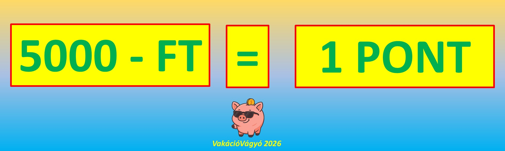

JÁTÉKSZABÁLYZAT
VakációVágyó Pontgyűjtő Rendszer
A VakációVágyó weboldal pontgyűjtő rendszere lehetőséget biztosít a felhasználók számára, hogy befizetéseik után pontokat szerezzenek, és ezek alapján különböző rangokat, valamint vásárlási utalványokat érjenek el.

1. A pontgyűjtés alapelvei
- Minden befizetett 5000 Ft után 1 pont kerül jóváírásra a felhasználó pontszámláján.
- A pontok számítása a befizetett összeg alapján automatikusan történik, kerekítési eltérés nélkül.
- A maximálisan elérhető pontszám: 68 pont.
2. Rangok és vásárlási utalványok
A megszerzett pontok alapján a felhasználók különböző rangokat érhetnek el. A rang elérésekor a rendszer automatikusan vásárlási utalványt utal át a játékos bankszámlájára.
| Rang |
Ponthatár |
Vásárlási
utalvány |
| Hátizsákos utazó |
0–14 pont |
– |
| Kalandor |
15–39 pont |
1000 Ft |
| Vakáció Mester |
40–61 pont |
3000 Ft |
| Horizontkutató |
62–68 pont |
5000 Ft |
Fontos:
- Az utalvány a rang elérésekor automatikusan utalásra kerül a játékos bankszámlájára.
- Az utalvány készpénznek minősül, ezért szabadon, bármire és bármikor felhasználható.
- Az utalványoknak nincs lejárati ideje.
3. A pontok és rangok nyilvántartása
- A felhasználó aktuális pontszáma és rangja a VakációVágyó weboldalán ellenőrizhető a Rangom menüpont alatt a felhasználó születési évének megadásával.
- A pontok és rangok számítása a befizetések alapján történik.
4. Záró rendelkezések
- A pontgyűjtés nem függ semelyik meghirdetett akciótól sem.
- A jóváírt bónuszösszegek nem tartoznak a pontggyűjtések közé.
- Az utalványok utalása minden ranglépés esetén kizárólag egyszer kerül utalásra így összesen egy felhasználó maximum 9.000 - Ft értékben szerezhet utalványt a ranglépései során.
- Ha elírást tapasztalsz a rangodban, vagy esetleg a pontszámodban, akkor jelezd kérlek azt a vakaciovagyo@gmail.com email címen.
- A rendszerben való részvétel automatikusan a szabályzat elfogadását jelenti.
------------------
A játékszabályzatot ide kattintva is eléred PDF formátumban!
2025. szeptember 22.